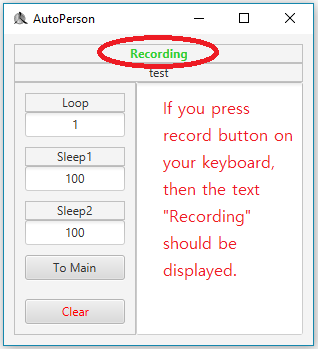

This tutorial explains how to record keyboard and mouse action.
Before recording, you need to create a file by clicking the New button.
Define a name for the file and click Create button.
If the file is successfully created, then you will go to the edit page.
While you are on the edit page, press record button you defined in the previous tutorial.

Record your action if it says "recording" with green color.
When you are finished recording, press the record key again to stop recording.
The text should display "Ready" at this time.
Click To Main button to go back to the main page.